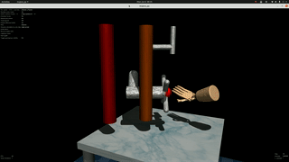

Dyna-2.1
Most recently (2026), I led a cross-functional team of researchers and engineers to build the first Physical Agent capable of reliable, long-horizon whole-body autonomy.
I’m a founding researcher and research lead at Dyna Robotics.
Previously, I worked at Cruise and Waymo on foundational perception models.
Most recently (2026), I led a cross-functional team of researchers and engineers to build the first Physical Agent capable of reliable, long-horizon whole-body autonomy.
I was a core contributor to Dyna-1, the first model to demonstrate that dexterous manipulation is commercially viable.

Training Robots to Evaluate Robots: Example-Based Interactive Reward Functions for Policy Learning.